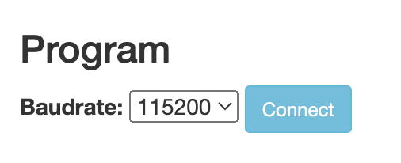
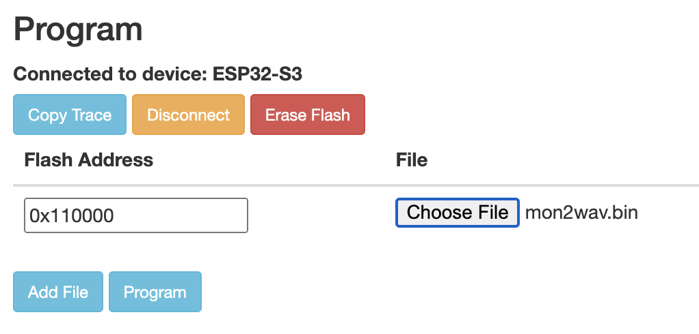

MON2 WAV Convertor
.:: website for converting wav files to .bin to flash for (o) MON 2 : SOUNDSCAPE MACHINE ::. fw 1.3
Steps to flash audio files into mon2
1. go to website https://espressif.github.io/esptool-js

2. Select Baudrate: to 115200 and click the Connect button.
3. Select the comport for MON2 and click the Connect button.

4. Set the flash address to 0x110000 and select the prepared mon2wav.bin file.
5. Press the Program button and wait until the flashing process is finished.
** Please press and hold button B2 before turning on the machine. until starting to flash the program. **
** go to website monkhumcc.github.io/mon2-flash-tool to update the firmware 1.3 or higher.
NOTE:
Make sure to close anything using your devices com port (e.g. Serial monitor).
Install the chip driver (CH9102F CH34XSER) before loading the program for the first time.
Your browser does not support the Web Serial API. Try Chrome